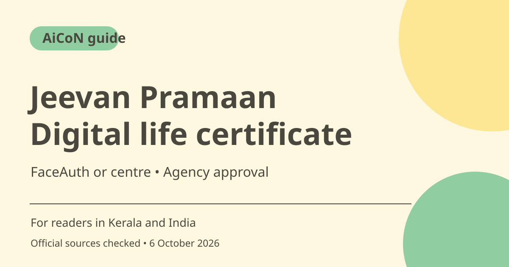

Jeevan Pramaan: digital life certificate and FaceAuth steps
Jeevan Pramaan creates an Aadhaar-based digital life certificate for eligible pensioners. You can use a supported FaceAuth phone setup or an authorised service route. Generation is not the same as pension-agency acceptance, so confirm eligibility, deadline and the recorded pension details first.

What is Jeevan Pramaan?
The official FAQ describes a biometric-enabled digital life certificate, called a DLC, with a unique Pramaan ID. It becomes electronically available to the pension disbursing agency, such as a bank or post office. It is an additional facility alongside existing life-certificate submission methods, not a replacement for every agency's rules.
Eligibility is narrower than every pensioner
The FAQ says the pension sanctioning authority must be onboarded to Jeevan Pramaan. It also says re-employed or remarried pensioners cannot use this DLC route and should follow the conventional route through their disbursing authority. Check your actual authority and situation rather than assuming a central or state pension automatically makes every digital method valid.
Choose a centre or phone route
The site describes Citizen Service Centres and pension disbursing offices such as banks, post offices or treasuries. Its locator helps find a centre. FaceAuth uses the phone camera without a separate fingerprint device, with the appropriate Aadhaar Face RD and Jeevan Pramaan apps. Confirm the centre's availability or your device's current compatibility before choosing a route.
Follow the current FaceAuth page
The checked FaceAuth download page specifies unrooted Android 9.0 or above and iOS 14.0 or above, plus the two required apps from their respective stores. The general FAQ still lists older Android requirements in one section. Use the current dedicated download page and app compatibility details instead of an old operating-system minimum copied into a WhatsApp post.
Correct details matter
The pensioner supplies Aadhaar or VID, name, mobile number and pension information such as PPO number, pension account and sanctioning/disbursing authority. Incorrect information can lead to rejection. A successful biometric check does not repair a wrong bank or PPO entry. Review the details with the pensioner, keeping sensitive information inside the official process.
Acceptance, validity and deadlines
The FAQ says a generated certificate remains subject to agency approval and is not valid for life. Its validity follows the sanctioning authority's rules. Save the acknowledgement and check acceptance status through the official route. Ask the pension agency about your due date instead of assuming the same deadline applies to every pensioner.
How to use it, step by step
- Confirm that your pension sanctioning authority is onboarded and that your circumstances permit the DLC route. Ask the disbursing agency about its due date and accepted method.
- Prepare your Aadhaar or VID, mobile and correct PPO, pension-account and agency details without sharing them in public messages.
- Choose an official centre using the locator, or open the dedicated FaceAuth download page for current phone requirements.
- For FaceAuth, install the official Aadhaar Face RD and Jeevan Pramaan apps through the links or store route identified by the portal. Do not install an APK sent by a stranger.
- Follow operator registration and pensioner identification steps in the maintained guide, then review all pension particulars.
- Complete the required biometric authentication with consent and save the SMS acknowledgement and Pramaan ID.
- Check the certificate's acceptance status and contact the disbursing agency if rejected. A generated ID alone is not proof the pension requirement is complete.
Cost, eligibility and limits
| Phone route | Compatible phone, internet and official apps required. FaceAuth does not need a separate fingerprint scanner. |
|---|---|
| Assisted route | Confirm any legitimate centre/service charge in advance. No fee buys guaranteed agency approval. |
| Eligibility | Onboarded authority required; FAQ excludes re-employed/remarried pensioners from this DLC route. |
| Validity | Not a lifetime certificate. Deadline, validity and acceptance follow the pension agency's rules. |
Frequently asked questions
Does a Pramaan ID mean the agency accepted it?
No. Generation is subject to pension-agency approval; check the status.
Do I need a fingerprint scanner for FaceAuth?
The official FAQ says no separate biometric device is needed for the face app; it uses the phone camera.
Is the certificate valid forever?
No. Validity is determined by the pension sanctioning authority's rules.
Official sources
Checked 6 October 2026. Features and prices can change. This is a guide, not a personal product test.